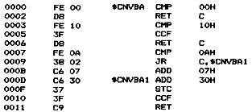
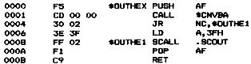
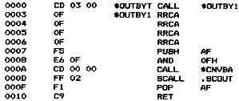
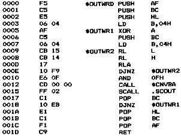

Nascom Journal |
August 1981 · Ausgabe 8 |
Im Teil 1 wurden Eingabe-Routinen für das Nascom-CLDDOS-System beschrieben. In diesem Teil sollen nun entsprechende Ausgabe-Routinen abgedruckt werden. Die erste Routine konvertiert HEX-Ziffern vom Binaer- ins ASCII-Format. Dann folgen drei Subroutinen für die Ausgabe von HEX-Ziffern, von Bytes und von Worten an das Terminal.
$CNVBA
Version 1.0
20-Nov-80
Die Subroutine $CNVBA konvertiert eine Hex-Ziffer vom Binaer- ins ASCII-Format.
Eingabe-Parameter:
– A – Ziffer im Binaer-Format
Ausgabe-Parameter:
– A – Ziffer im Ascii-Format
– CARRY=0 – Gueltige Ziffer in A
– CARRY=1 – Keine Hex-Ziffer in A
Verwendete Register: AF

$OUTHEX
Version 1.0
25-Apr-81
Die Subroutine $Outhex gibt eine Hex-Ziffer an das Terminal aus. Falls im Register A keine Hex-Ziffer enthalten ist, wird ein &Sbquo;?&Lsquo; an das Terminal ausgegeben.
Eingabe-Parameter:
– A – Ziffer im Binaer-Format
Ausgabe-Parameter:
– A – Ziffer im Binaer-Format
Verwendete Register: –

$OUTBYT
Version 1.0
25-Apr-81
Die Subroutine $OUTBYT gibt ein Byte in Hex-Darstellung aus.
Eingabe-Parameter:
– A – Byte
Ausgabe-Parameter:
– A – Byte
Verwendete Register: AF

$OUTWRD
Version 1.0
25-Apr-81
Die Subroutine $OUTWRD gibt ein Word in Hex-Darstellung an das Terminal aus.
Eingabe-Parameter:
– HL – Word
Ausgabe-Parameter:
– HL – Word
Verwendete Register: –

| Seite 18 von 24 |
|---|